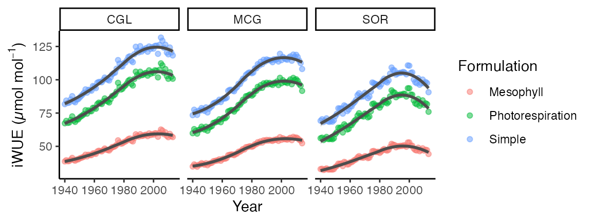

library(isocalcR)
library(tidyr)
library(dplyr)
#>
#> Attaching package: 'dplyr'
#> The following objects are masked from 'package:stats':
#>
#> filter, lag
#> The following objects are masked from 'package:base':
#>
#> intersect, setdiff, setequal, union
library(ggplot2)
isocalcR Function |
Description |
|---|---|
d13C.to.D13C |
Calculate leaf carbon isotope discrimination (∆13C) given plant tissue δ13C signature (‰) |
d13C.to.Ci |
Calculate leaf intercellular CO2 concentration (ppm) given plant tissue δ13C signature (‰) |
d13C.to.CiCa |
Calculate the ratio of leaf intercellular CO2 to atmospheric CO2 concentration (ppm) given plant tissue δ13C signature (‰) |
d13C.to.diffCaCi |
Calculate the difference between atmospheric CO2 concentration (ppm) and leaf intercellular CO2 concentration (ppm) given plant tissue δ13C signature (‰) |
d13C.to.iWUE |
Calculate leaf intrinsic water use efficiency (µmol CO2 mol H2O-1) given plant tissue δ13C signature (‰) |
custom.calc |
Calculate ∆13C, Ci, CiCa, diffCaCi, or iWUE given plant tissue δ13C signature (‰) |
Data for atmospheric CO2 and atmospheric δ13CO2 for the period 0 C.E. to 2021 C.E. can be loaded and viewed. Data are from Belmecheri and Lavergne (2020).
data(CO2data) #Load CO2data into your environment
head(CO2data, 10) #View initial CO2data observations
#> yr Ca d13C.atm
#> 1 0 277.63 -6.41
#> 2 1 277.63 -6.41
#> 3 2 277.64 -6.41
#> 4 3 277.64 -6.41
#> 5 4 277.65 -6.41
#> 6 5 277.66 -6.41
#> 7 6 277.66 -6.41
#> 8 7 277.67 -6.41
#> 9 8 277.67 -6.41
#> 10 9 277.68 -6.41
tail(CO2data, 10) #View most recent CO2data observations
#> yr Ca d13C.atm
#> 2014 2013 395.1600 -8.390000
#> 2015 2014 397.5400 -8.420000
#> 2016 2015 399.6200 -8.440000
#> 2017 2016 402.8200 -8.517840
#> 2018 2017 404.3096 -8.538528
#> 2019 2018 406.1517 -8.536936
#> 2020 2019 408.8255 -8.579904
#> 2021 2020 411.0815 -8.591044
#> 2022 2021 413.0753 -8.594226
#> 2023 2022 415.0163 -8.656291Data for piru13C can loaded and viewed.
data(piru13C)
head(piru13C)
#> # A tibble: 6 × 6
#> # Groups: Year [2]
#> Year Site wood.d13C MGT_C Elevation_m frac
#> <dbl> <chr> <dbl> <dbl> <dbl> <dbl>
#> 1 1940 CGL -23.2 17.4 1206 2
#> 2 1940 MCG -24.0 17.4 1060 2
#> 3 1940 SOR -24.5 17.4 1033 2
#> 4 1941 CGL -22.9 18.6 1206 2
#> 5 1941 MCG -23.6 18.6 1060 2
#> 6 1941 SOR -24.4 18.6 1033 2Calculate leaf intrinsic water use efficiency from leaf δ13C:
library(isocalcR) #Load the package
#Calculate iWUE from leaf organic material with a δ13C signature of -27 ‰ for the year 2015,
#300 meters above sea level at 25°C.
d13C.to.iWUE(d13C.plant = -27,
year = 2015,
elevation = 300,
temp = 25)
#> [1] 87.58236
#Use custom.calc to calculate iWUE from the same leaf sample as above.
custom.calc(d13C.plant = -27,
d13C.atm = -8.44,
outvar = "iWUE",
Ca = 399.62,
elevation = 300,
temp = 25)
#> [1] 87.58236
#Calculate the ratio of leaf intercellular to atmospheric CO2 (Ci/Ca) using the simple
#formulation for leaf and wood. Internally updates apparent fractionation by Rubisco, b,
#according to Cernusak and Ubierna 2022.
d13C.to.CiCa(d13C.plant = -27,
year = 2015,
elevation = 300,
temp = 25,
tissue = "leaf")
#> [1] 0.6493374
d13C.to.CiCa(d13C.plant = -27,
year = 2015,
elevation = 300,
temp = 25,
tissue = "wood")
#> [1] 0.6954988
#Calculate iWUE using the "simple", "photorespiration", and "mesophyll" formulations.
d13C.to.iWUE(d13C.plant = -28,
year = 2015,
elevation = 300,
temp = 15,
method = "simple")
#> [1] 75.99569
d13C.to.iWUE(d13C.plant = -28,
year = 2015,
elevation = 300,
temp = 15,
method = "photorespiration")
#> [1] 75.35815
d13C.to.iWUE(d13C.plant = -28,
year = 2015,
elevation = 300,
temp = 15,
method = "mesophyll")
#> [1] 44.00744
#Calculate iWUE from tree ring (wholewood) d13C from Mathias and Thomas (2018)
#using previously loaded piru13C data
#First drop years where there are no data
piru13C <- piru13C %>%
drop_na()
#Calculate iWUE for each case using 'mapply'
piru13C$iWUE_simple <- mapply(d13C.to.iWUE, #Call the function
d13C.plant = piru13C$wood.d13C, #Assign the plant d13C value
year = piru13C$Year, #Assign the year to match atmospheric CO2 and atmospheric d13CO2
elevation = piru13C$Elevation_m, #Assign the elevation
temp = piru13C$MGT_C, #Assign the temperature
method = "simple", #Specify the method
tissue = "wood") #Specify which tissue the sample is from
piru13C$iWUE_photorespiration <- mapply(d13C.to.iWUE, #Call the function
d13C.plant = piru13C$wood.d13C, #Assign the plant d13C value
year = piru13C$Year, #Assign the year to match atmospheric CO2 and atmospheric d13CO2
elevation = piru13C$Elevation_m, #Specify elevation
temp = piru13C$MGT_C, #Specify the temperature during tissue formation
method = "photorespiration", #Specify the iWUE calculation formulation
frac = piru13C$frac) #Specify any post-photosynthetic fractionations. In this case 2 permille to account for leaf to wood.
piru13C$iWUE_mesophyll <- mapply(d13C.to.iWUE, #Call the function
d13C.plant = piru13C$wood.d13C, #Assign the plant d13C value
year = piru13C$Year, #Assign the year to match atmospheric CO2 and atmospheric d13CO2
elevation = piru13C$Elevation_m, #Specify elevation
temp = piru13C$MGT_C, #Specify the temperature during tissue formation
method = "mesophyll", #Specify the iWUE calculation formulation
frac = piru13C$frac) #Specify any post-photosynthetic fractionations. In this case 2 permille to account for leaf to wood.
#Create dataframe for visualizing differences in computed iWUE among the three formulations
piru13C_long <- piru13C %>%
select(Year, Site, iWUE_simple, iWUE_photorespiration, iWUE_mesophyll) %>% #Select only columns of interest
rename(Simple = iWUE_simple,
Photorespiration = iWUE_photorespiration,
Mesophyll = iWUE_mesophyll) %>%
pivot_longer(names_to = "Formulation", values_to = "iWUE", -c(Year, Site))
#Visually examine differences in iWUE based on the formulation used for each study location
ggplot(data = piru13C_long, aes(x = Year, y = iWUE, color = Formulation)) +
geom_point(alpha = 0.5) +
geom_smooth(aes(group = Formulation), color = "gray30") +
theme_classic() +
facet_wrap(~Site) +
ylab(expression("iWUE (µmol mol"^{-1}*")"))
#> `geom_smooth()` using method = 'loess' and formula = 'y ~ x'
Badeck, F.-W., Tcherkez, G., Nogués, S., Piel, C. & Ghashghaie, J. (2005). Post-photosynthetic fractionation of stable carbon isotopes between plant organs—a widespread phenomenon. Rapid Commun. Mass Spectrom., 19, 1381–1391.
Belmecheri, S. & Lavergne, A. (2020). Compiled records of atmospheric CO2 concentrations and stable carbon isotopes to reconstruct climate and derive plant ecophysiological indices from tree rings. Dendrochronologia, 63, 125748.
Bernacchi, C.J., Singsaas, E.L., Pimentel, C., Portis Jr, A.R. & Long, S.P. (2001). Improved temperature response functions for models of Rubisco-limited photosynthesis. Plant, Cell Environ., 24, 253–259.
Craig, H. (1953). The geochemistry of the stable carbon isotopes. Geochim. Cosmochim. Acta, 3, 53–92.
Cernusak, L. A. & Ubierna, N. Carbon Isotope Effects in Relation to CO2 Assimilation by Tree Canopies. in Stable Isotopes in Tree Rings: inferring physiological, climatic, and environmental responses 291–310 (2022).
Davies, J.A. & Allen, C.D. (1973). Equilibrium, Potential and Actual Evaporation from Cropped Surfaces in Southern Ontario. J. Appl. Meteorol., 12, 649–657.
Farquhar, G., O’Leary, M. & Berry, J. (1982). On the relationship between carbon isotope discrimination and the intercellular carbon dioxide concentration in leaves. Aust. J. Plant Physiol., 9, 121–137.
Frank, D.C., Poulter, B., Saurer, M., Esper, J., Huntingford, C., Helle, G., et al. (2015). Water-use efficiency and transpiration across European forests during the Anthropocene. Nat. Clim. Chang., 5, 579–583.
Gong, X. Y. et al. Overestimated gains in water‐use efficiency by global forests. Glob. Chang. Biol. 1–12 (2022)
Lavergne, A. et al. Global decadal variability of plant carbon isotope discrimination and its link to gross primary production. Glob. Chang. Biol. 28, 524–541 (2022).
Ma, W. T. et al. Accounting for mesophyll conductance substantially improves 13C-based estimates of intrinsic water-use efficiency. New Phytol. 229, 1326–1338 (2021).
Mathias, J. M. & Thomas, R. B. Disentangling the effects of acidic air pollution, atmospheric CO2 , and climate change on recent growth of red spruce trees in the Central Appalachian Mountains. Glob. Chang. Biol. 24, 3938–3953 (2018).
Tsilingiris, P.T. (2008). Thermophysical and transport properties of humid air at temperature range between 0 and 100°C. Energy Convers. Manag., 49, 1098–1110.
Ubierna, N. & Farquhar, G.D. (2014). Advances in measurements and models of photosynthetic carbon isotope discrimination in C3 plants. Plant. Cell Environ., 37, 1494–1498.